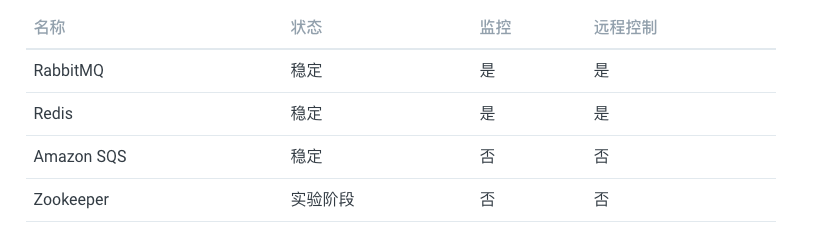
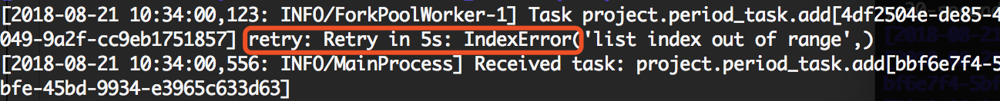
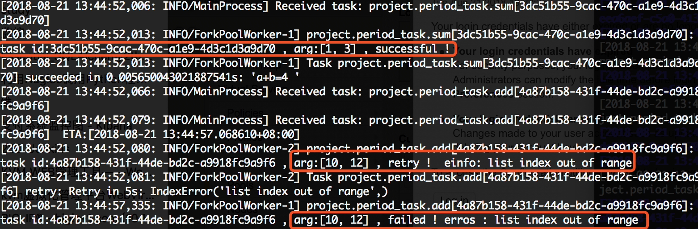
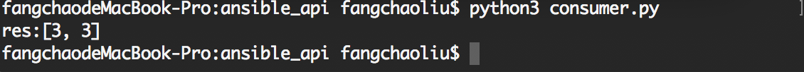
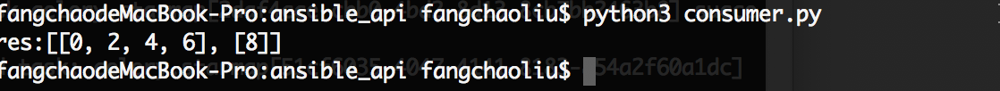

对于普通的任务来说可能无法满足我们的任务需求，所以还需要了解一些进阶用法，Celery 提供了诸多调度方式，例如任务编排、根据任务状态执行不同的操作、重试机制等。

1. 相关组件介绍
了解 Celery 相关的生态环境
Celery 通过消息机制进行通信，通常使用中间人 Broker 为客户端和 Worker 调节。启动一个任务，客户端向消息队列发送一条消息，然后中间人 Broker 将消息传递给一个 Worker，最后由 Worker 进行执行分配的任务。可以有多个 Broker 和 Worker，用来提高 Celery 的高可用性以及横向扩展能力。Celery 是用 Python 编写的，但协议可以用任何语言实现，如 Node.js 语言的 node-celery 项目。
- 支持的中间人
- RabbitMQ
- Redis
- Amazon SQS

支持的结果存储
- AMQP、Redis
- Memcached
- SQLAlchemy、Django ORM
- Apache Cassandra、Elasticsearch
支持的并发
- prefork (multiprocessing)
- Eventlet、gevent
- solo (single threaded)
支持的序列化
- pickle、json、yaml、msgpack
- zlib、bzip2 compression
- Cryptographic message signing

- 支持的框架集成
- Flask - 不需要
- Tornado - tornado-celery
- Pyramid - pyramid_celery
- web2py - web2py-celery
2. 简单使用方式
主要的用途就是，帮助你快速上手和使用！
- [简单使用] 我们将所有的内容都保存到一个文件中，而针对于大型项目而已，可能就需要创建独立的模块和配置文件了。
- 安装环境依赖和启动基础服务
- 编写 app 程序
- 启动 Worker 服务并调用任务
# 使用docker运行MQ服务
$ docker run -d -p 5462:5462 rabbitmq
# 使用docker运行Redis服务
$ docker run -d -p 6379:6379 redis
# 使用pip安装依赖
$ pip install celery# 最简单的Demo示例(tasks.py)
from celery import Celery
app = Celery('hello', broker='amqp://guest@localhost//')
@app.task
def add(x, y):
return x + y# 启动celery进程
$ celery worker -A hello --loglevel=info
# 调用任务
# 需要我们创建的实例任务并通过delay()进行调用
$ python
>>> from hello.tasks import add
>>> add.delay(4, 4)- [后端存储] 如果需要保存任务状态，Celery 需要在某处存储任务的状态信息，其中内置了一些后端存储方案。通过配置文件中的
backend参数，来指定后端存储方案。在已经配置后端存储的情况下，重新执行任务调用，可以保存对应的消息状态。- ORM(
SQLAlchemy/Django) - Memcached
- Redis
- RPC(
RabbitMQ/AMQP) - 自定义的后端结果存储中间件
- ORM(
# RPC
app = Celery('hello', backend='rpc://', broker='pyamqp://')
# Redis
app = Celery('hello', backend='redis://localhost', broker='pyamqp://')# 调用任务
# 需要我们创建的实例任务并通过delay()进行调用
$ python
>>> from hello.tasks import add
>>> result = add.delay(4, 4)
>>> result.ready() # 检测是否已经处理完毕
False
>>> result.get(timeout=1) # 设置超时时间
8
>>> result.get(propagate=False) # 是否再次引发异常
>>> result.traceback # 任务出现异常进行回溯- [相关配置] 大多数情况下，使用默认的配置就可以满足，当然也可以根据我们的实际需求按需配置。针对大型的项目，建议使用专用配置模块进行配置，将所有的配置项集中化配置。
# [配置项] 通过upate进行配置
# 程序启动时导入的模块列表，便于Worker执行相应的任务
from celery import Celery
app = Celery('hello',
backend='redis://localhost',
broker='pyamqp://',
include=['hello.tasks'])
app.conf.update(
task_serializer='json', # 设置任务输出格式
accept_content=['json'], # 忽略其他内容
result_serializer='json', # 设置结果输出格式
timezone='Europe/Oslo', # 时区
enable_utc=True, # 启用UTC时钟
task_routes={ # 设置任务专用队列
'hello.tasks.add': 'low-priority',
},
task_annotations = { # 任务进行限速
'hello.tasks.add': {'rate_limit': '10/m'}
}
)
if __name__ == '__main__':
app.start()
# $ celery worker -A hello -Q hello
# >>> from hello.tasks import add
# >>> add.apply_async((2, 2), queue='hello')# [配置模块] 加载配置模块
app.config_from_object('celery_config')
# celery_config.py
broker_url = 'pyamqp://'
result_backend = 'rpc://'
task_serializer = 'json'
result_serializer = 'json'
accept_content = ['json']
timezone = 'Europe/Oslo'
enable_utc = True
task_routes = {
'hello.tasks.add': 'low-priority',
}
task_annotations = {
'hello.tasks.add': {'rate_limit': '10/m'}
}- [远程控制] 对应运行中的队列任务，我们可以通过对应的命令进行监控。
# inspect
$ celery -A proj inspect --help
# control
$ celery -A proj control --help
# event
$ celery -A proj events --help
# status
$ celery -A proj status --help3. 进阶 - 定时任务
# Celery的提供的定时任务主要靠schedules来完成
# 通过beat组件周期性的将任务发送给woker进行执行# period_task.py
# 新建period_task.py文件并添加任务到配置文件中
from learn_celery import app
from celery.schedules import crontab
@app.task
def add(x, y):
print(x+y)
return x+y
@app.task
def say_hello(name):
return f'hello {name}'
@app.on_after_configure.connect
def setup_periodic_tasks(sender, **kwargs):
# 每10秒执行add任务
sender.add_periodic_task(10.0, add.s(1,3), name='1+3=')
sender.add_periodic_task(
# 每周一下午四点五十六执行say_hello任务
crontab(hour=16, minute=56, day_of_week=1),
say_hello.s('escape'), name='say_hello'
)# config.py
BROKER_URL = 'redis://:escape@127.0.0.1:6379/0' # Broker配置
CELERY_RESULT_BACKEND = 'redis://:escape@127.0.0.1:6379/0' # BACKEND配置
CELERY_RESULT_SERIALIZER = 'json' # 结果序列化方案
CELERY_TASK_RESULT_EXPIRES = 60 * 60 * 24 # 任务过期时间
CELERY_TIMEZONE='Asia/Shanghai' # 时区配置
CELERY_IMPORTS = ( # 指定导入的任务模块
'learn_celery.tasks', # 普通任务
'learn_celery.period_task', # 定时任务
)# 启动worker和beat之后观察worker日志
# 会发现定时任务会自动往队列中添加，之后被对应worker消费掉
# 启动worker
$ celery worker -A learn_celery.tasks -l debug
# 启动beat
$ celery beat -A learn_celery.period_task -l debug# config.py
# 还可以通过配置文件方式指定定时和计划任务
from learn_celery import app
from celery.schedules import crontab
BROKER_URL = 'redis://:escape@127.0.0.1:6379/0' # Broker配置
CELERY_RESULT_BACKEND = 'redis://:escape@127.0.0.1:6379/0' # BACKEND配置
CELERY_RESULT_SERIALIZER = 'json' # 结果序列化方案
CELERY_TASK_RESULT_EXPIRES = 60 * 60 * 24 # 任务过期时间
CELERY_TIMEZONE='Asia/Shanghai' # 时区配置
CELERY_IMPORTS = ( # 指定导入的任务模块
'learn_celery.tasks', # 普通任务
'learn_celery.period_task', # 定时任务
)
app.conf.beat_schedule = {
'period_add_task': { # 添加计划任务
'task': 'learn_celery.period_task.add', # 任务路径
'schedule': crontab(hour=18, minute=16, day_of_week=1), # 执行周期
'args': (3, 4), # 传入参数
},
'say_hello': { # 添加计划任务
'task': 'learn_celery.period_task.say_hello', # 任务路径
'schedule': 10.0, # 执行周期
'args': ('escape',) # 传入参数
},
}# period_task.py
# 此时的period_task.py只需要注册到woker中就行了
from project import app
@app.task
def add(x,y):
print(x+y)
return x+y
@app.task
def say_hello(name):
return f'hello {name}'4. 进阶 - 任务绑定
# Celery可通过任务绑定到实例获取到任务的上下文
# 这样我们可以在任务运行时候获取到任务的状态，记录相关日志等# period_task.py
# 通过bind参数将任务绑定，self指任务的上下文
# 通过self获取任务状态，同时在任务出错时进行任务重试
from learn_celery import app
from celery.utils.log import get_task_logger
logger = get_task_logger(__name__)
@app.task(bind=True) # 绑定任务
def add(self, x, y):
logger.info(self.request.__dict__) # 打印日志
try:
a=[]
a[10] == 1
except Exception as e:
# 出错每5秒尝试一次，总共尝试3次
raise self.retry(exc=e, countdown=5, max_retries=3)
return x+y
5. 进阶 - 内置钩子函数
# Celery在执行任务时候，提供了钩子方法用于在任务执行完成时候进行对应的操作
# 在Task源码中提供了很多状态钩子函数如:
# on_success(成功后执行)
# on_failure(失败时候执行)
# on_retry(任务重试时候执行)
# after_return(任务返回时候执行)
# 在进程中使用是我们只需要重写这些方法，完成相应的操作即可# period_task.py
# 在以下示例中，我们继续修改period_task.py文件
# 分别定义三个任务来演示任务失败、重试、任务成功后执行的操作
from learn_celery import app
from celery.utils.log import get_task_logger
from celery import Task
logger = get_task_logger(__name__)
class demotask(Task):
# 任务成功执行
def on_success(self, retval, task_id, *args, **kwargs):
logger.info(f'task id:{task_id}, arg:{args}, successful!')
# 任务失败执行
def on_failure(self, exc, task_id, *args, **kwargs, einfo):
logger.info(f'task id:{task_id}, arg:{args}, failed! erros:{exc}')
# 任务重试执行
def on_retry(self, exc, task_id, *args, **kwargs, einfo):
logger.info(f'task id:{task_id}, arg:{args}, retry! einfo:{exc}')
@app.task(base=demotask, bind=True)
def add(self, x, y):
try:
a=[]
a[10] == 1
except Exception as e:
# 出错每5秒尝试一次，总共尝试1次
raise self.retry(exc=e, countdown=5, max_retries=1)
return x+y
@app.task(base=demotask)
def say_hello(name):
a=[]
a[10] == 1
return f'hello {name}'
@app.task(base=demotask)
def sum(a, b):
return f'a+b={a+b}'# config.py
from learn_celery import app
from celery.schedules import crontab
BROKER_URL = 'redis://:escape@127.0.0.1:6379/0' # Broker配置
CELERY_RESULT_BACKEND = 'redis://:escape@127.0.0.1:6379/0' # BACKEND配置
CELERY_RESULT_SERIALIZER = 'json' # 结果序列化方案
CELERY_TASK_RESULT_EXPIRES = 60 * 60 * 24 # 任务过期时间
CELERY_TIMEZONE='Asia/Shanghai' # 时区配置
CELERY_IMPORTS = ( # 指定导入的任务模块
'learn_celery.tasks', # 普通任务
'learn_celery.period_task', # 定时任务
)
app.conf.beat_schedule = {
'add': { # 每10秒执行
'task': 'learn_celery.period_task.add',
'schedule': 10.0,
'args': (10, 12),
},
'say_hello': { # 每10秒执行
'task': 'learn_celery.period_task.say_hello',
'schedule': 10.0,
'args': ('escape',),
},
'sum': { # 每10秒执行
'task': 'learn_celery.period_task.sum',
'schedule': 10.0,
'args': (1, 3),
},
}
6. 进阶 - 任务编排
# 在很多情况下，一个任务需要由多个子任务或者一个任务需要很多步骤才能完成
# Celery同样也能实现这样的任务，完成这类型的任务通过以下模块完成
# group: 并行调度任务
# chain: 链式任务调度
# chord: 类似group但分header和body2个部分;header可以是一个group任务，执行完成后调用body的任务
# map: 映射调度，通过输入多个入参来多次调度同一个任务
# starmap: 类似map，入参类似＊args
# chunks: 将任务按照一定数量进行分组# tasks.py
from learn_celery import app
@app.task
def add(x, y):
return x+y
@app.task
def mul(x, y):
return x*y
@app.task
def sum(data_list):
res=0
for i in data_list:
res+=i
return res# consumer.py
# group: 组任务
# 组内每个任务并行执行
from celery import group
from learn_celery.tasks import add
# 任务 [1+2, 1+2]
res = group(add.s(1,2), add.s(1,2))()
while True:
if res.ready():
print(f'res:{res.get()}')
break
# consumer.py
# chain: 链式任务
# 链式任务中，默认上一个任务的返回结果作为参数传递给子任务
from celery import group
from learn_celery.tasks import add, mul, sum
# 任务((1+2)+3)*3
res = chain(add.s(1,2), add.s(3), mul.s(3))()
while True:
if res.ready():
print(f'res:{res.get()}')
break# consumer.py
# chord：任务分割
# 分为header和body两部分
# hearder任务执行完在执行body，其中hearder返回结果作为参数传递给body
from celery import group
from learn_celery.tasks import add, mul, sum
# 任务(1+2)+(3*4)
res = chord(header=[add.s(1,2), mul.s(3,4)], body=sum.s())()
while True:
if res.ready():
print('res:{}'.format(res.get()))
break# consumer.py
# chunks：任务分组
# 按照任务的个数分组
from learn_celery.tasks import add, mul, sum
# 4代表每组的任务的个数
res = add.chunks(zip(range(5), range(5)), 4)()
while True:
if res.ready():
print('res:{}'.format(res.get()))
break
7. 异步调用原理
主要解释 delay 和 apply_async 的使用方法和区别
# 对于delay和apply_async都可以用来进行任务的调度
# 本质上是delay对apply_async进行了再一次封装或者可以说是快捷方式
# 两者都返回AsyncResult对象，以下是两个方法源码# --------------------------------------------
# delay源码
# --------------------------------------------
def delay(self, *args, **kwargs):
"""Star argument version of :meth:`apply_async`.
Does not support the extra options enabled by :meth:`apply_async`.
Arguments:
*args (Any): Positional arguments passed on to the task.
**kwargs (Any): Keyword arguments passed on to the task.
Returns:
celery.result.AsyncResult: Future promise.
"""
return self.apply_async(args, kwargs)# --------------------------------------------
# apply_async源码
# --------------------------------------------
def apply_async(self, args=None, kwargs=None, task_id=None, producer=None,
link=None, link_error=None, shadow=None, **options):
if self.typing:
try:
check_arguments = self.__header__
except AttributeError: # pragma: no cover
pass
else:
check_arguments(*(args or ()), **(kwargs or {}))
app = self._get_app()
if app.conf.task_always_eager:
with denied_join_result():
return self.apply(args, kwargs, task_id=task_id or uuid(),
link=link, link_error=link_error, **options)
if self.__v2_compat__:
shadow = shadow or self.shadow_name(self(), args, kwargs, options)
else:
shadow = shadow or self.shadow_name(args, kwargs, options)
preopts = self._get_exec_options()
options = dict(preopts, **options) if options else preopts
options.setdefault('ignore_result', self.ignore_result)
return app.send_task(
self.name, args, kwargs, task_id=task_id, producer=producer,
link=link, link_error=link_error, result_cls=self.AsyncResult,
shadow=shadow, task_type=self,
**options
)8. 使用注意事项
# -------------------------------------------------------------------
# 1.在celery中worker启动时，如果是root用户则需要设置环境变量
# -------------------------------------------------------------------
$ export C_FORCE_ROOT='true'# -------------------------------------------------------------------
# 2.使用RabbitMQ或Redis作为Broker的话，生产环境永远不要使用关系型数据库
# 3.Celery4.x开始不再支持Windows平台，如果需要在Windows开发请使用3.x的版本
$ pip install celer[redis]==4.3.0
$ pip install celery[librabbitmq]
$ pip install celery[librabbitmq,redis,auth,msgpack]
# -------------------------------------------------------------------# 4.良好的配置操作
# 禁用预取任务是为了防止Broker分配任务不均导致多次重复执行
# 设置执行多少次任务之后进行销毁是为了防止卡死的出现和发生
worker_prefetch_multiplier=0 # 禁用预取任务
worker_max_tasks_per_child=50 # 每个worker执行50次任务即销毁# -------------------------------------------------------------------
# 5.不要使用复杂对象作为任务函数的参数
# -------------------------------------------------------------------
# Good
@app.task
def my_task(user_id):
user = User.objects.get(id=user_id)
print(user.name)
...
# Bad
@app.task
def my_task(user):
print(user.name)
...9. 相关参考链接
授人玫瑰，手有余香！